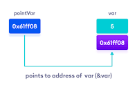

Trong ngôn ngữ C/C++, con trỏ (pointer) là những biến lưu trữ địa chỉ bộ nhớ của những biến khác.

Trong hình trên, biến var lưu giá trị 5 có địa chỉ là 0x61ff08.
Biến pointVar là biến con trỏ, lưu địa chỉ của biến var (trỏ đến vùng nhớ của biến var), tức là nó lưu giá trị 0x61ff08.
Con trỏ NULL là con trỏ lưu địa chỉ 0x00000000. Tức địa chỉ bộ nhớ 0, có ý nghĩa đặc biệt, cho biết con trỏ không trỏ vào đâu cả.
Con trỏ hàm là một biến lưu trữ địa chỉ của một hàm, thông qua biến đó, ta có thể gọi hàm mà nó trỏ tới.
Ví dụ:
cách khai báo void(*ptr)(int ,int)
Con trỏ void được khai báo giống như một con trỏ bình thường, sử dụng từ khóa void làm kiểu con trỏ:
void *ptr;
Tuy nhiên, con trỏ void không xác định được kiểu dữ liệu của vùng nhớ mà nó trỏ tới, chúng ta không thể truy xuất trực tiếp
Pointer to pointer là một loại con trỏ dùng để lưu trữ địa chỉ của biến con trỏ.
Kích thước của các biến con trỏ có khác nhau không? Con trỏ chỉ lưu địa chỉ nên kích thước của mọi con trỏ là như nhau. Kích thước này phụ thuộc vào môi trường hệ thống máy tính: